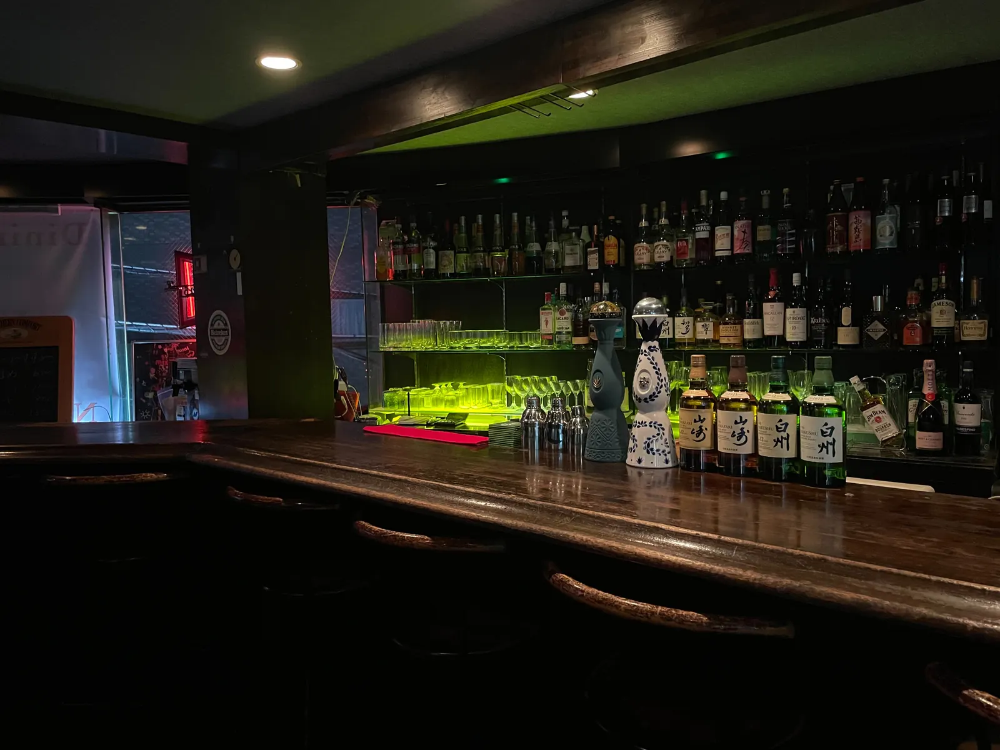
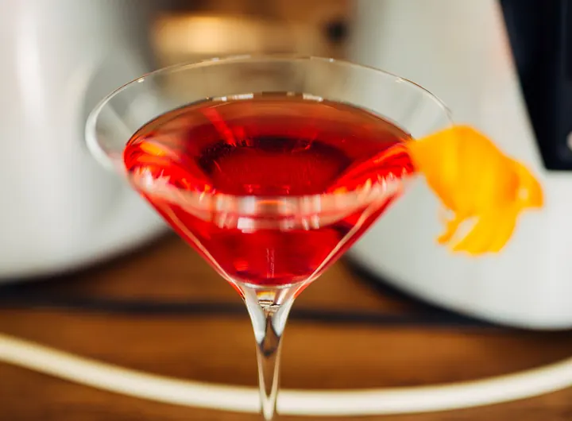
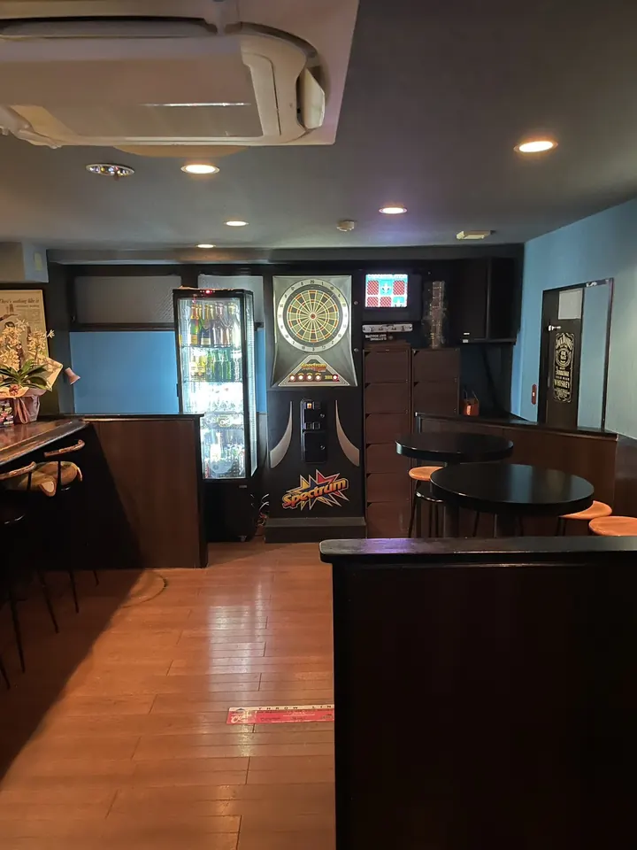

機能 1いま営業中かの表示日本時間で「営業中」「準備中」「定休日」を自動で表示。臨時休業のお知らせにも合わせて切り替わります。
営業時間 19:00〜翌朝7:00日曜定休
練馬駅のダイニングバーXⅢ クロスリー
今夜、ちょっとだけ寄り道しない？
仕事帰りに。飲み直しに。一人でも、誰かとでも。
銀座・麻布で腕を磨いたマスターが、一杯ずつ丁寧に作ります。
この案に入っている機能（19個）
バーのホームページでよく使われる機能を、ひととおり入れた見本です。気に入った機能を、ほかの案に足すこともできます。
この説明の札は提案用で、本番のページには出ません。お店の方に答えてもらう質問はページのいちばん下にあります（答えを LINE で送ってもらえます）。
- 機能 1いま営業中かの表示日本時間で「営業中」「準備中」「定休日」を自動で表示。臨時休業のお知らせにも合わせて切り替わります。
- 機能 2お知らせ臨時休業・臨時営業などを日付つきで載せます。日付が過ぎると自動で消えます。
- 機能 3バーテンダー紹介マスターの経歴・得意なお酒・ひとこと。顔が見えると、初めての人も入りやすくなります。
- 機能 4今夜の一杯診断好みを2つ選ぶと、おすすめのカクテルが出ます。お酒に詳しくない人でも注文しやすくなります。
- 機能 5メニューの絞り込み・検索お酒の種類で切り替えたり、名前で探したりできます。
- 機能 6料金のめやすチャージや1杯の値段、だいたいの予算。初めての人の「いくらかかる？」の不安を消します。
- 機能 7営業カレンダー定休日・臨時休業・臨時営業が、月ごとのカレンダーでひと目でわかります。お知らせを書くと自動で反映されます。
- 機能 8予約リクエスト日にち・時間・人数を入れると、お店に送る文面を自動で作ります。SMSで送る・コピーしてDMに貼る、が選べます（予約の仕組みを用意しなくても使えます）。
- 機能 9貸切・グループの案内人数や飲み放題などのプラン。二次会や集まりの相談を受けやすくなります。
- 機能 10ダーツの紹介料金と楽しみ方。ダーツ目当てのお客さんに届きます。
- 機能 11写真ギャラリー店内の写真を並べ、押すと大きく見られます。
- 機能 12アクセス一式駅からの道順の図・入口のようす・地図・今いる場所からの道順・住所のコピー。
- 機能 13Instagramの表示お店の投稿をページに表示し、フォローボタンを置きます。
- 機能 14友だちに送るLINEで送る・リンクのコピー。飲み会のお店決めで共有されやすくなります。
- 機能 15LINE公式アカウント友だち追加のボタン。友だちになったお客さんに、臨時休業のお知らせやクーポンを届けられます。予約の文面をLINEでそのまま送ることもできます。アカウントは無料から作れます。
- 機能 16英語の案内営業時間や行き方を英語で。海外のお客さん向けです。
- 機能 17よくある質問たばこ・予約・一人でも入れるか、などに先に答えておきます。
- 機能 18スマホの下の固定ボタンどこまで読んでも、電話・道順・予約がすぐ押せます。
- 機能 19検索・共有のための情報Googleなどに店名・住所・営業時間を正しく伝えるデータと、LINEなどで共有したときの画像。目には見えませんが入っています。
機能 2お知らせ臨時休業・臨時営業などを日付つきで載せます。日付が過ぎると自動で消えます。
お知らせ
見本 お店からお知らせが届いたら、このように表示します。臨時休業・臨時営業の日付を書くと、日付が過ぎたものは自動で消えます。
- 臨時休業
店主都合により、臨時休業いたします。
- 臨時営業19:00〜翌7:00
日曜日ですが、特別に営業します。
- 臨時休業
年末年始のお休みをいただきます。
機能 3バーテンダー紹介マスターの経歴・得意なお酒・ひとこと。顔が見えると、初めての人も入りやすくなります。
マスターの紹介
お店の写真が届いたら差し替えます。
MASTER BARTENDER
マスター（お名前）
カウンターに立つのは、銀座と麻布のバーで腕を磨いてきたマスター。定番のカクテルも、その日の気分を伝えて作ってもらう一杯も。本格の一杯を、練馬で気軽にどうぞ。
- 経歴
- 銀座・麻布のバー
- 得意なお酒
- 得意なお酒・カクテルが入ります
マスターからのひとことが入ります
機能 4今夜の一杯診断好みを2つ選ぶと、おすすめのカクテルが出ます。お酒に詳しくない人でも注文しやすくなります。
今夜の一杯診断
お酒に詳しくなくても大丈夫。好みを2つ選ぶと、おすすめのカクテルが出ます。

機能 6料金のめやすチャージや1杯の値段、だいたいの予算。初めての人の「いくらかかる？」の不安を消します。
料金のめやす
初めての方でも安心して来られるように。
ご予算のめやす：2〜3杯とチャージで ¥〇,〇〇〇くらい
お支払い：現金・クレジットカード・QR決済
機能 7営業カレンダー定休日・臨時休業・臨時営業が、月ごとのカレンダーでひと目でわかります。お知らせを書くと自動で反映されます。
営業カレンダー
19:00〜翌朝7:00（日曜定休）
| 月 | 火 | 水 | 木 | 金 | 土 | 日 |
|---|
- 営業
- 定休日
- 臨時休業
- 臨時営業
機能 8予約リクエスト日にち・時間・人数を入れると、お店に送る文面を自動で作ります。SMSで送る・コピーしてDMに貼る、が選べます（予約の仕組みを用意しなくても使えます）。
予約リクエスト
日にち・時間・人数を入れると、お店に送る文面を作ります。予約の受け方はお店と相談して決めます
機能 9貸切・グループの案内人数や飲み放題などのプラン。二次会や集まりの相談を受けやすくなります。
PARTY貸切・グループ
二次会や仲間の集まりに。人数やご予算に合わせてご相談ください。
- 貸切
- 〇名様から貸切できます
- 飲み放題
- 飲み放題 〇時間 ¥〇,〇〇〇
- ご予約
- お電話・Instagram の DM で承ります
機能 10ダーツの紹介料金と楽しみ方。ダーツ目当てのお客さんに届きます。
DARTSダーツ

ダーツマシンがあります。初めての方も、仲間とのゲームもどうぞ。
1ゲーム ¥100
機能 11写真ギャラリー店内の写真を並べ、押すと大きく見られます。
店内の写真
写真を押すと大きく見られます。
機能 12アクセス一式駅からの道順の図・入口のようす・地図・今いる場所からの道順・住所のコピー。
アクセス
西武池袋線・西武有楽町線・都営大江戸線「練馬駅」南口から徒歩5分
- 練馬駅の南口を出て、目の前の「練馬駅前」交差点へ（西武線はどの改札から出ても行けます）
- 千川通りを渡って右へ。マクドナルドの角を左に曲がります
- 細い道をまっすぐ約120m。左にファミリーマート、右に七輪焼肉 牛繁が見えたら、もうすぐです
- 斜めの通りを渡ってすぐ右の青いビル（エクセル豊玉）。木の扉の右にあるガラスの扉から入り（右の案内板に XⅢ の看板があります）、エレベーターで3階へ
- 店名
- ダイニングバー XⅢ クロスリー
CROSSLEY - 住所
- 〒176-0012
東京都練馬区豊玉北5丁目30-12
エクセル豊玉 3F - アクセス
- 西武池袋線・西武有楽町線・都営大江戸線「練馬駅」南口から徒歩5分
- 営業時間
- 19:00〜翌朝7:00
ラストオーダー 翌朝6:30 - 定休日
- 日曜定休
土曜の夜は日曜の朝7時まで営業／祝日は〇〇 - 席数
- カウンター〇席・テーブル〇席
- チャージ
- お一人様 ¥〇〇〇
- お支払い
- 現金・クレジットカード・QR決済
- たばこ
- 店内で喫煙できます（20歳未満の方は入店できません）
- @xiii.nerima.2026
機能 13Instagramの表示お店の投稿をページに表示し、フォローボタンを置きます。
機能 14友だちに送るLINEで送る・リンクのコピー。飲み会のお店決めで共有されやすくなります。
Instagram・友だちに送る
飲み会のお店決めに。このページを友だちに送れます。
LINEで友だちに送る機能 15LINE公式アカウント友だち追加のボタン。友だちになったお客さんに、臨時休業のお知らせやクーポンを届けられます。予約の文面をLINEでそのまま送ることもできます。アカウントは無料から作れます。
LINE 公式アカウント
友だち追加すると、臨時休業や営業のお知らせ、クーポンなどを LINE で受け取れます。予約のご相談も LINE でどうぞ。
LINE ID：@〇〇〇〇
機能 16英語の案内営業時間や行き方を英語で。海外のお客さん向けです。
English Guide
- Name
- Dining Bar XⅢ CROSSLEY
- Hours
- 7 pm – 7 am (closed on Sundays)
- Address
- 3F Excel Toyotama, 5-30-12 Toyotamakita, Nerima-ku, Tokyo 176-0012
- Station
- About 5 minutes on foot from Nerima Station (Seibu Ikebukuro Line / Toei Oedo Line)
- Darts
- ¥100 per game
- Smoking
- Smoking is allowed inside. Guests under 20 cannot enter.
- Phone
- +81 70-9065-1559
- Leave Nerima Station by the South Exit (from the Seibu Line, any gate is fine) and go to the “Nerima-eki-mae” crossing.
- Cross Senkawa-dori and turn right. Turn left at the McDonald’s corner.
- Walk straight about 120 m, passing FamilyMart on your left.
- Cross the diagonal street. The blue building on your right is Excel Toyotama. Enter by the glass door (look for the XⅢ sign on the board to the right) and take the elevator to the 3rd floor.
機能 17よくある質問たばこ・予約・一人でも入れるか、などに先に答えておきます。
よくある質問
一人でも入りやすいですか？
はい。カウンター席で、ゆっくり過ごせます。お一人でも気軽にどうぞ。
何時まで営業していますか？
19:00から翌朝7:00まで営業しています。日曜日は定休日です。
ダーツはできますか？
はい、ダーツマシンがあります。料金は 1ゲーム ¥100 です。
チャージ（席料）はかかりますか？
お一人様 ¥〇〇〇 をいただいています。
予約はできますか？
お電話・Instagram の DM で承ります
個室はありますか？
個室はありません。カウンター席と、ダーツのそばのテーブル席があります。
たばこは吸えますか？
店内で喫煙できます（20歳未満の方は入店できません）
支払い方法を教えてください。
現金・クレジットカード・QR決済 がご利用いただけます。
駅からの行き方を教えてください。
練馬駅南口から徒歩5分、エクセル豊玉の3階です。ビルにはエレベーターがあります。
お店の方へ
ホームページのために、教えてください
わかるところだけで大丈夫です。選ぶか、書き込んでください。書いた内容はこのスマホ（パソコン）に残るので、あとから続きを書けます。書き終わったら、いちばん下の「LINEで送る」で送ってください。
全35問
書き終わったら、送ってください
「LINEで送る」を押すと、答えをまとめた文面で LINE が開きます。送る相手を選んで送ってください。うまく開かないときは「回答をコピー」を押して、LINE のトークに貼り付けてください。